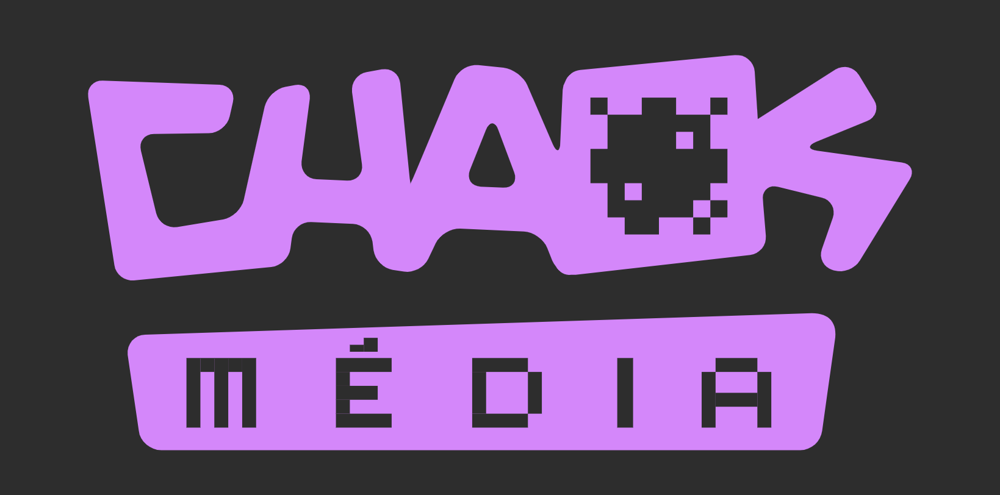
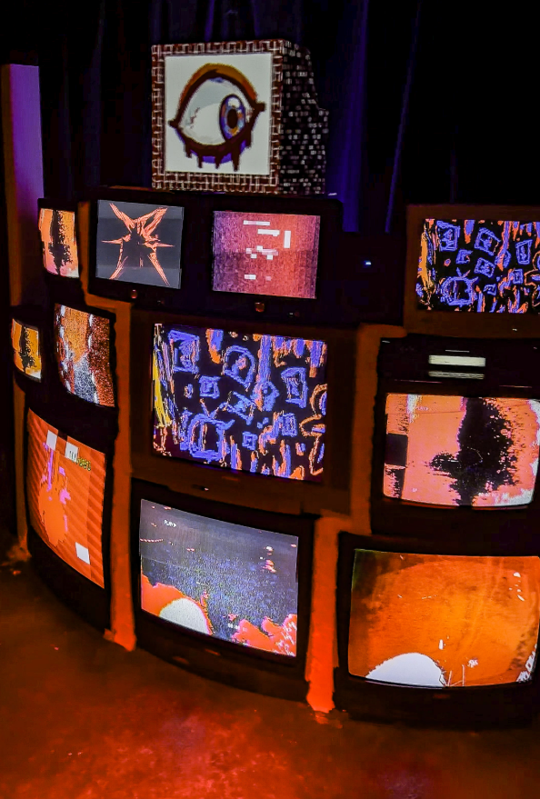
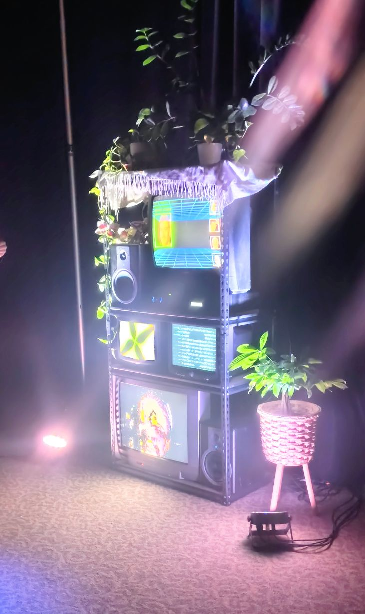
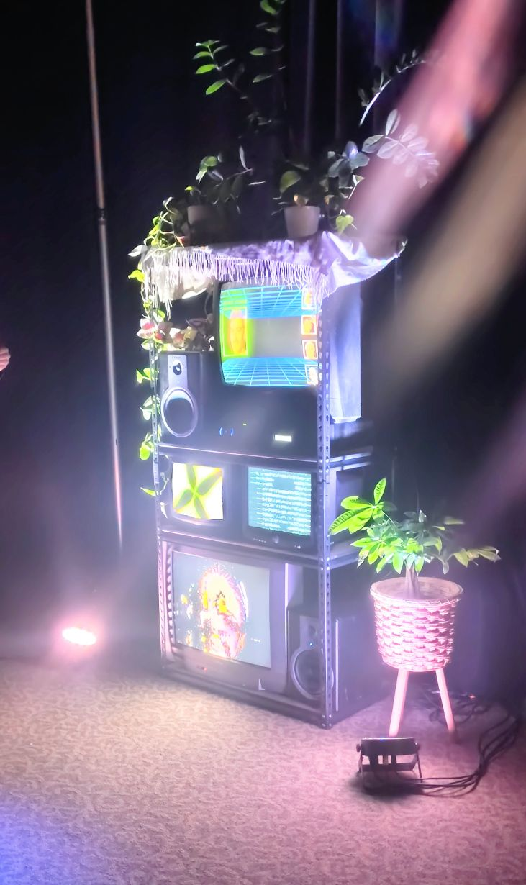

Ambiance Sonore Générale
M.O.N.A II présenté à Chaos Média ➡
est une évolution plus légère et transportable de l’installation originale M.O.N.A ➡
présentée lors de la 16e édition de Chaos Médias.
Cette seconde itération propose une interaction plus subtile, presque inévitable. L’installation
prend la forme d’une étagère industrielle en acier avec panneaux de bois, supportant quatre
téléviseurs cathodiques (CRT) de tailles variées. La scénographie évoque volontairement un meuble
ordinaire que l’on pourrait retrouver dans un salon : haut-parleurs, plantes, couverture style
grand-mère, et même un iDog branché en prise audio, émettant des sons spontanés.
Les visuels incitent les visiteurs à s’approcher mais ce rapprochement déclenche le comportement de
M.O.N.A. À l’aide d’une webcam, le système capture le visage du visiteur et l’archive dans sa base
de données. M.O.N.A répond ensuite en affichant, sur l’écran principal supérieur, une image
précédemment capturée de cette même personne, accompagnée de quatre visages lui ressemblant le plus.
Lors d’une première interaction, le système diffuse plutôt la photo la plus récente enregistrée.
M.O.N.A II explore les notions de reconnaissance, de mémoire et de consentement à travers une mise
en scène volontairement banale et domestique. Ce qui semble d’abord inoffensif et familier révèle
progressivement un système qui observe, archive et réagit selon sa propre logique.
L'installation utilise des caméras qui captent la face et la présence des visiteurs.
Accompagnés d'un système sonore surround génératif, la bande sonore diffusée via un ensemble de 4
haut-parleurs placés sur l'étagère, réagit en temps réel aux gestes
des visiteurs, offrant une ambiance sonore unique à chaque interaction.
Rôle :
En tant que concepteur et intégrateur sonore du projet, ma mission était de créer une signature
audio cohérente avec l’ambiguïté de l’installation. J’ai développé des ambiances discrètes et
organiques, ainsi que des signaux sonores déclenchés par la détection et l’archivage des visages. Le
travail sonore devait demeurer subtil, presque imperceptible au premier abord, afin de renforcer
l’impression d’un environnement familier, tout en révélant progressivement la présence d’un système
actif.
Project owner : Clément Boucher
Conception sonore : Jean-Christophe Zephir
Reconnaissance faciale : Sasha Bédard
Scénographie et installation physique : Dominic Roberts
Développement backend et intégration : Raton Gosselin
Création visuelle : Maxime Simard
Année : 2025
Catégorie : Installation interactive
 
